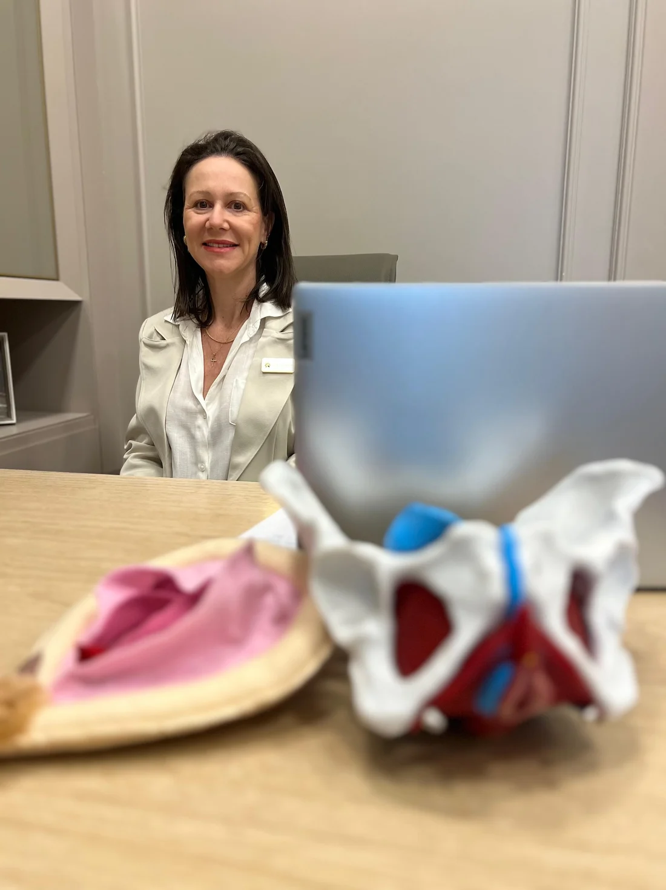
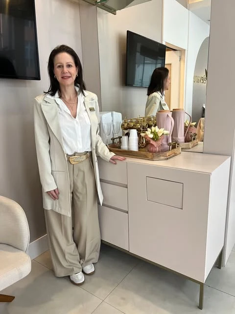
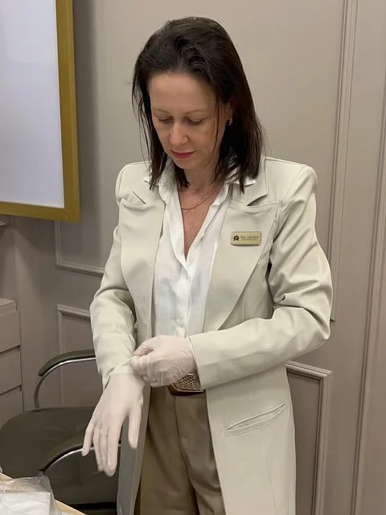

FISIOTERAPIA PARA A SAÚDE DA MULHER
Seu corpo merece
ser escutado.
Fisioterapia pélvica e abdominal em Criciúma, com a Dra. Luciana De Luca Dalsasso.
Um espaço para falar sobre o que você sente e dar o primeiro passo no cuidado com você.
Conversar sobre uma avaliação ↗
Dra. Luciana De Luca DalsassoFisioterapeuta
experiência
O CUIDADO
Nem toda dúvida
precisa ficar só com você.
Conheça as áreas de atuação da Luciana. A avaliação é o momento de entender sua necessidade e conversar sobre as possibilidades de acompanhamento.
01Fisioterapia pélvicaUm olhar para a sua saúde íntima+
Um atendimento voltado à região pélvica e às questões que envolvem a saúde íntima. Leve suas dúvidas e sintomas para uma avaliação profissional.
Quero entender melhor ↗02Fisioterapia abdominalAtenção à região abdominal+
O primeiro contato ajuda a esclarecer sua busca pelo cuidado abdominal. A indicação e o planejamento do atendimento dependem da avaliação individual.
Conversar com a Luciana ↗Cada pessoa tem sua história. Não existe uma indicação única para todos os casos.


PRESENÇA. ESCUTA. CUIDADO.QUEM VAI RECEBER VOCÊ
Prazer,
sou a Luciana.
Dra. Luciana De Luca Dalsasso
Fisioterapeuta em Criciúma, com 23 anos de experiência e atuação em fisioterapia pélvica e abdominal.
No meu perfil, compartilho informações sobre saúde pélvica, o corpo e o cuidado na rotina. Aqui, você encontra um caminho direto para conhecer meu trabalho e solicitar uma avaliação.
Conheça meu perfil · @ludelucad ↗SEM COMPLICAÇÃO
Começa com
uma conversa.
Você não precisa ter todas as respostas antes de entrar em contato.
- 01
Conte o que você procura
Envie uma mensagem pelo WhatsApp para tirar dúvidas sobre o atendimento.
- 02
Consulte a disponibilidade
Confirme o local de atendimento, os horários e as informações para agendar.
- 03
Combine sua avaliação
Converse diretamente com a profissional sobre o próximo passo.
PARA CONHECER MELHOR
Informação também
é um jeito de cuidar.
DRA. LUCIANA · CRICIÚMA, SC
Vamos dar espaço
ao seu cuidado?
Converse comigo para solicitar informações
e combinar uma avaliação.
Evite enviar informações íntimas ou exames no primeiro contato.